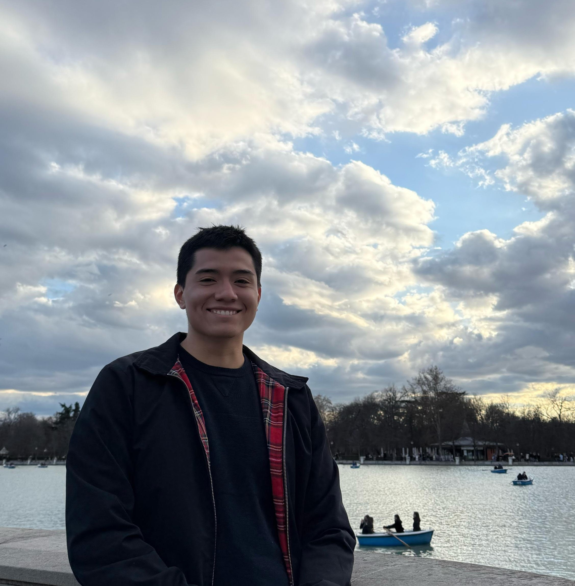

I'm a PhD student in Economics at Universidad Carlos III de Madrid. My research interests are migration, labor and network economics. I'm also member of the organizing committee of the Junior Migration Seminar.
I have been TA of Principles of Economics, Microeconomics and Urban Economics at the undergreaduate level at UC3M since 2022.
This section is ready for your future work!